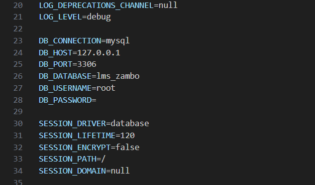
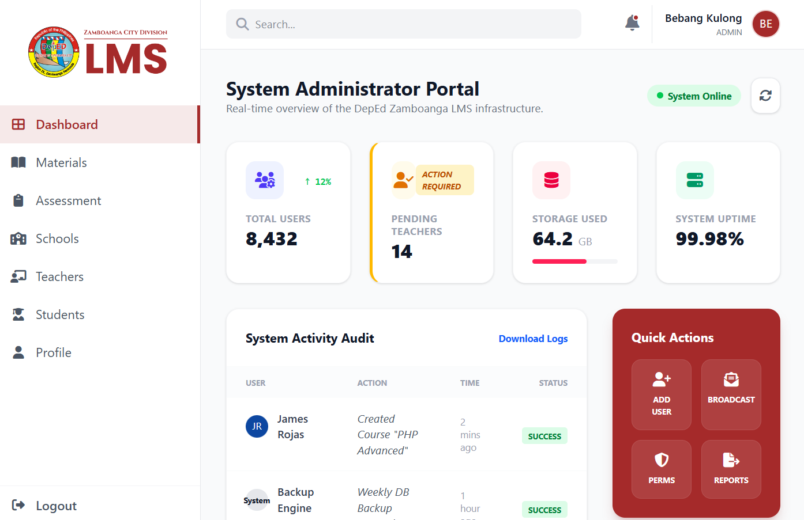
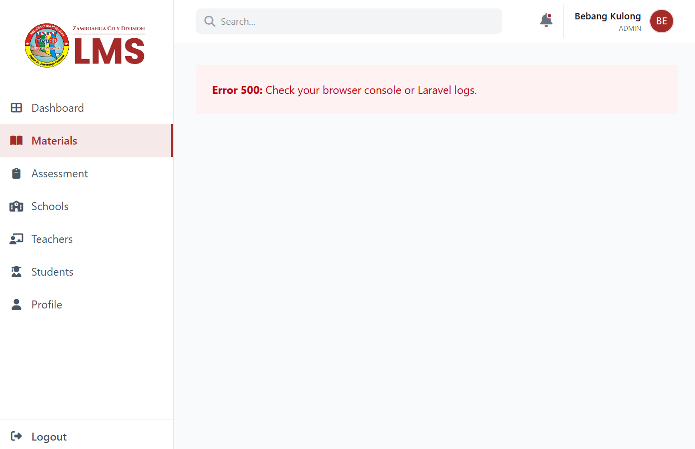

Database Migration & Role-Based Access
JB
James Benedict
March 3, 2026
Week 2
The second week of my internship was pivotal for our Learning Management System (LMS) development. We shifted our focus from initial prototyping to ensuring backend stability and user accessibility. A major technical undertaking this week was migrating our entire database system from PostgreSQL to XAMPP (MySQL) to ensure total server compatibility for the DepEd Zamboanga City Division infrastructure.

The migration process brought several schema incompatibilities and routing conflicts, including Error 500 pages during attempts to access role-based dashboards. I addressed these by meticulously reconfiguring database connection strings and updating our middleware logic. With these errors resolved, I successfully implemented role-based rerouting, which automatically directs users to specific, secure dashboards based on their assigned permissions.

Beyond the backend, I managed the integration of multiple school profiles into the database and applied Tailwind CSS fixes to ensure the system is fully responsive across all devices. These efforts helped us reach a 15% completion milestone for the project. I also led team sessions to resolve complex Git merge conflicts, which provided a great opportunity to improve our team's version control workflow and technical communication.

This week reinforced that system interoperability and environment alignment are just as critical as the core code. Applying these database management and software engineering theories has been excellent preparation for my goal of becoming a Full-Stack Developer. I am looking forward to developing the Computer-Based Assessment (CBA) system next week.